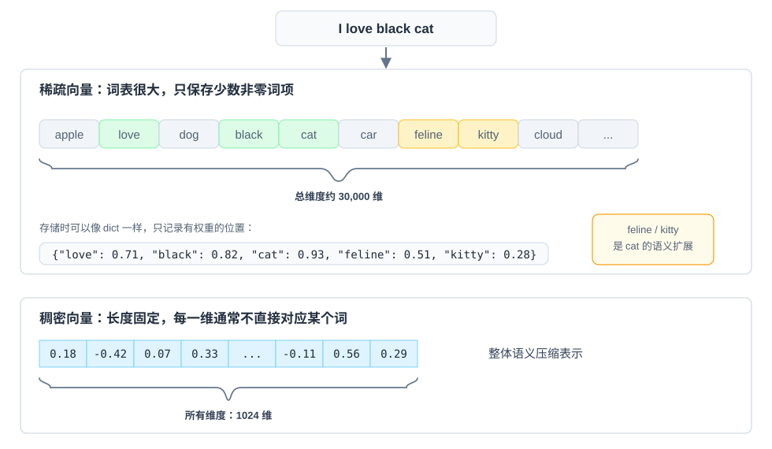
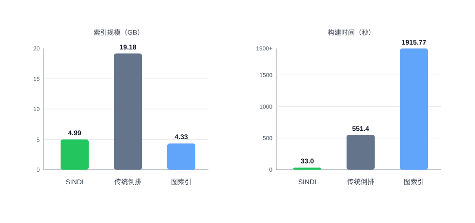
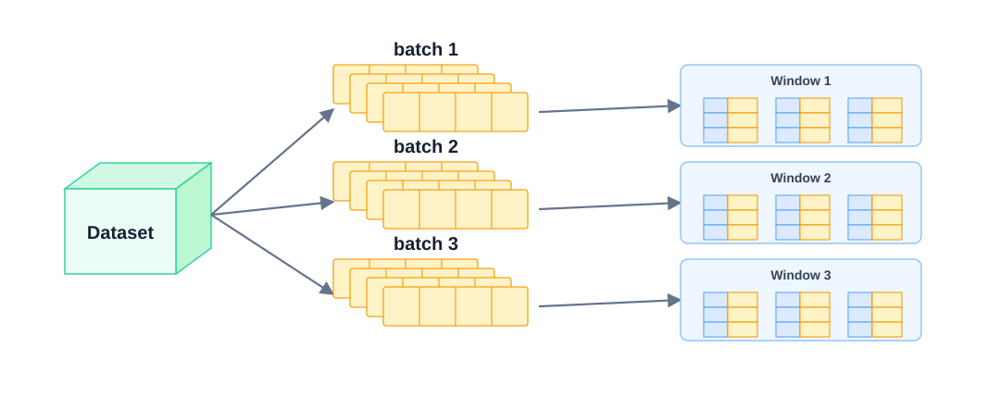
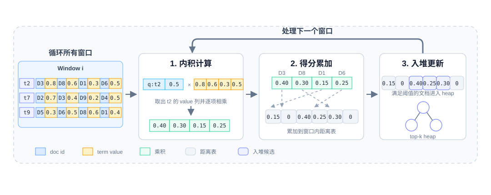
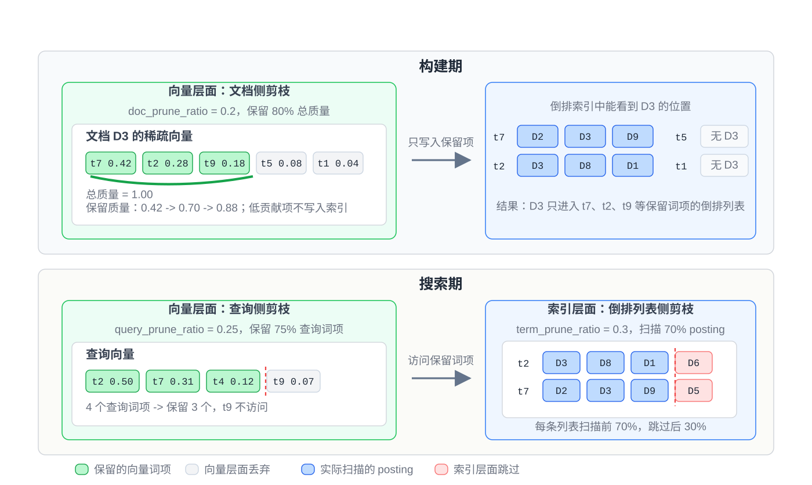
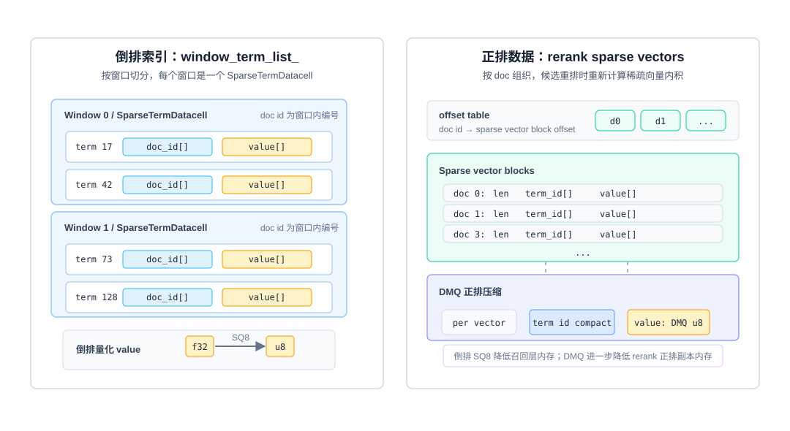

稀疏向量检索方案：SINDI 在 VSAG 上的设计与实践（ICDE 2026）
本文作者：蚂蚁集团 VSAG 团队 李若瑄
1、为什么需要 SINDI
（1）从用户问题说起
在阅读本文之前，读者应该对向量检索、倒排索引等基础概念有一定了解。读完本文后，你将了解：1）稀疏向量检索的核心挑战；2）SINDI 的窗口化倒排、多层剪枝、量化与重排等关键设计；3）如何在 VSAG 中配置和调优 SINDI 索引。
在 RAG（Retrieval-Augmented Generation，检索增强生成） 、智能搜索和推荐系统里，用户的提问越来越“混合”。有人会直接搜产品型号、错误码或专有名词，有人会描述一个模糊需求，也有人会用同义词、简称、口语表达来提问。在实际检索系统中，召回链路既要听懂意思，又不能放过关键字。只靠一条召回链路，很难把这些情况都覆盖住。
稠密向量召回（Dense Retrieval） 擅长语义泛化：用户没有使用原文关键词时，模型仍然可以通过语义相似性找回相关内容。但它也有明显短板，例如专有名词、产品型号、错误码、长尾实体、代码符号等细粒度词项，往往需要非常精确的匹配信号。
传统词项召回（BM25 / TF-IDF） 擅长关键词匹配：BM25（Best Match 25，一种基于概率模型的词项权重算法）和 TF-IDF 会根据词项匹配关系给出稳定、可解释的分数。但它们缺少深层语义理解，对同义改写、上下文语义和隐式意图不够敏感。
所以在工业检索里，更常见的做法是把 BM25 + 稀疏向量 + 稠密向量 放在一起用。BM25 负责字面匹配；稀疏向量负责可解释的语义化词项匹配；稠密向量负责整体语义泛化。三路信号互补后，召回效果通常会高于任意两路组合。
SINDI 要解决的，就是实现更高性能、更低成本的 稀疏向量检索（Sparse Vector Search） 。
（2）什么是稀疏向量
稀疏向量（Sparse Vector） 是一种只记录高维词表或特征空间中少量非零 词项（Term） 及其权重的向量表示。
稀疏向量的关键特征可以被概括成以下三点：
- 高维且极度稀疏：维度可以达到几万甚至几十万，但每条文档或查询只包含少量非零项。
- 语义化的词项扩展：
学习稀疏模型（Learned Sparse Model）不只统计原文词频，还可以通过模型激活与上下文相关的词项和同义词，让稀疏向量具备一定语义扩展能力。 - 可解释性强：每个非零维度都对应明确的词项或特征，权重也可以直接参与排查。线上出现 bad case 时，研发人员能够看到是哪些 term 拉高或拉低了分数。

图 1：稀疏向量和稠密向量的表示差异
例 1 如图 1，同一句 “I love black cat” 可以被表示成两类完全不同的向量。
稠密向量（Dense Vector）会把整句话压成一段固定长度的浮点数组，例如[0.18, -0.42, 0.07, ...]。这些维度共同表达整体语义，但单独看某一维，通常无法解释它对应哪个词或特征。
稀疏向量（Sparse Vector）则建立在一个很大的词表空间上。图 1 中，词表空间可以达到 30,000 维，但真正有权重的位置只有少数几个。原文中的love、black、cat会被记录下来，学习稀疏模型还可能进一步激活feline、kitty这类和cat语义相关的词项。存储时，稀疏向量通常不会保存完整的 30,000 维数组，而是只保存非零项及其权重，压缩成
{love: 0.71, black: 0.82, cat: 0.93, feline: 0.51, kitty: 0.28}。在工程实现中即保存为一组(term_id, weight)对。这样既保留了可解释的词项信号，也避免了为大量 0 值浪费存储空间。因此，二者的核心区别在于：稠密向量每一维通常不可直接解释，但整体语义表达能力强；稀疏向量每一维都对应实际词项，通过激活相关词支持一定的语义能力。
所以，稀疏向量不是“只会做关键词匹配”。它也有一定语义能力，只是表达方式仍然保留在词表空间里。
稀疏向量检索的核心是 最大内积搜索（Maximum Inner Product Search，MIPS） 。给定查询稀疏向量 $ q $ 和文档稀疏向量 $ d $，只需要计算两边重合词项上的 权重乘积和 ：
$$ score(q,d)=\sum_{t \in q \cap d}q_t \cdot d_t $$
VSAG 的 SINDI 正是围绕这一计算模式设计的稀疏向量索引。
（3）SINDI 带来的核心价值
SINDI 由 VSAG 团队与华东师范大学合作研发，发表于 ICDE（IEEE International Conference on Data Engineering，数据库领域 CCF-A 类顶级会议） 。它适合 BM25 、SPLADE（一种基于 Transformer 的学习稀疏模型） 、BGE-M3 sparse（BAAI 开源多语言嵌入模型中的稀疏向量版本） 等召回链路中的稀疏表示。
和传统倒排索引、图索引相比，SINDI 的第一点优势是 低成本索引构建。这里的低成本，主要体现在两件事上：构建速度快，索引规模小。在 1000 万规模的中文数据集上，SINDI 的构建时间只有 33.0 秒，索引规模为 4.99 GB。作为对比，传统倒排方案需要 551.4 秒，索引规模达到 19.18 GB；开源图索引方案的索引规模接近，但构建时间达到 1915.77 秒。

图 2：索引规模和构建时间对比
第二点优势是 效率和精度的平衡 。在高召回目标下，SINDI 仍然能保持很高吞吐。下表里，Zilliz 是 BigANN Benchmark sparse track 的 SOTA（State of the Art，当前最优） 索引，PyANNS 是开源 SOTA 索引。可以看到，当召回要求从 90% 提升到 99% 时，SINDI 的 QPS（Queries Per Second，每秒查询数） 均为 最优，且下降更为平缓。
| 方案 | 召回 90% QPS | 召回 95% QPS | 召回 99% QPS |
|---|---|---|---|
| SINDI | 14236 | 11839 | 3920 |
| Zilliz | 13815 | 8046 | <2000 |
| PyANNS | 12427 | 6025 | <2000 |
第三点优势是 参数更容易分析 。SINDI 提供了静态和动态两类索引分析能力，可以指导开发者分析索引内存利用率、词表和数据预处理是否匹配、倒排链是否存在明显长尾，以及 剪枝（Pruning） 、量化（Quantization） 、候选池（Candidate Pool） 和 重排（Reranking） 分别对召回与耗时产生了多大影响。这样在调整候选数量、查询剪枝、词项剪枝、文档剪枝、量化和重排参数时，索引更易调优，可以在使用成本和效果之间取得更好的平衡。
在设计 SINDI 时，团队也对比过纯图索引方案和纯倒排方案。图索引在极高召回场景下有较强表达能力，但构建成本和参数复杂度较高；纯倒排方案构建快、结构简单，但查询吞吐容易受长倒排链和随机访问影响。SINDI 最终选择窗口化带权倒排结构，是在构建成本、查询性能、内存占用和召回率之间的综合权衡。
下面继续看 SINDI 是怎么做到这些效果的。
2、SINDI 的关键设计
（1）Window-based 带权倒排结构

图 3：SINDI 的窗口化倒排结构
稀疏向量检索的瓶颈除了乘法和加法计算本身，还有内存访问。
传统倒排表和图索引如果只保存 doc id（文档编号） ，计算分数时还需要回到原始向量区域查找 term 权重 。这个过程会带来大量 随机访问（Random Access） ，CPU Cache 命中率 就会下降。CPU Cache 是处理器高速缓存，命中率越高说明数据读取越高效；一旦频繁缓存未命中，吞吐就很容易被内存延迟限制住。
SINDI 采用的是 带权倒排列表（Value-based Inverted List） ：每个 term list（词项倒排链） 不只保存文档编号，同时保留该 term 在文档里的权重。查询访问某个 term 时，可以沿着一段连续数组顺序读出 局部文档编号 + 文档侧权重 ，直接计算 查询侧权重 × 文档侧权重 ，再累加到距离数组里。这样查询时按数组顺序扫描，减少回查原始向量带来的随机跳转。
SINDI 还引入了 Window-based（窗口化） 组织方式。这里的窗口可以理解为一批连续编号的文档，每个窗口大小相同。构建时，全量文档会被切成多个窗口，每个窗口维护一组独立的 term list。窗口分片限制了单次处理的文档范围，距离数组只需要覆盖当前窗口。相比维护一张面向全量文档的巨大分数表，窗口内的距离数组更容易留在缓存里，更新得分时也能减少随机访问带来的 缓存未命中（Cache Miss） 。同时，窗口内 doc id 以 uint16_t（无符号 16 位整数类型，可表示 0 到 65535 的范围）保存，因此 window_size 被限制在 10,000 到 60,000 之间，还可以降低 doc id 的存储占用。
简单说，SINDI 希望把查询尽量变成“顺序读、就地算、少跳转”。这也是它在大规模稀疏向量检索中保持高吞吐的关键。
（2）Term-based 高效得分机制

图 4：SINDI 的按词项得分计算流程
SINDI 查询阶段采用 Term-based（按词项驱动） 的得分方式。给定一个查询，系统会先拿到查询里有权重的词项。然后在每个窗口里，逐个访问这些词项对应的倒排列表。
每次访问倒排列表时，SINDI 会把 查询侧权重 × 文档侧权重 的结果累加到当前 window 的 距离表（Distance Table） 中。等当前窗口里所有查询词项都扫完后，距离表里的分数就是每个候选文档和查询的完整内积分数。接下来，SINDI 再把分数较高的文档更新到 top-k 候选堆 里。
这个做法的好处是很明显的。它不是把每篇文档都拿出来和查询完整比较，而是让查询词项主动去倒排列表里找可能相关的文档。对于不相关的词项和文档，SINDI 直接跳过。这极大地减少了查找共同词项的开销，因为大部分文档和查询只会在少数词项上有交集。
配合前面的 window-based 布局，SINDI 每次只维护当前窗口内的一张临时距离表。扫描倒排列表、累加分数、更新候选，都尽量在小范围内完成。这样内存访问更连续，距离表也更容易被缓存住。简单说，就是少看无关文档，少做随机访问，把计算集中在真正可能命中的文档上。
例 2 如图 4，SINDI 的搜索过程可以理解成嵌套循环：外层遍历所有 window，内层遍历查询里的 term。系统先进入
Window i，为这个窗口准备一张只覆盖窗口内文档的距离表；然后逐个处理查询词项。当前窗口处理完成后，SINDI 会用该窗口里的高分文档更新全局 top-k 候选堆，再进入下一个 window，重复同样的过程。以
Window i为例，假设当前查询包含词项t2，且查询侧权重为0.5。SINDI 会在当前 window 中找到t2对应的 term list。这个列表里包含若干个 posting ，例如(D3, 0.8)、(D8, 0.6)、(D1, 0.3)、(D6, 0.5)。这里每个 posting 都表示“某篇文档包含t2，且文档侧权重是多少”。计算时，SINDI 不会把文档完整向量取出来比较，而是直接用查询侧权重乘以 posting 中的文档侧权重：
$$D3: 0.5 \times 0.8 = 0.40$$
$$D8: 0.5 \times 0.6 = 0.30$$
$$D1: 0.5 \times 0.3 = 0.15$$
$$D6: 0.5 \times 0.5 = 0.25$$
这些结果会被累加到
Window i的距离表里。比如D3在t2上先得到0.40，如果后续又命中t7或t9，新的乘积会继续加到D3的同一个距离表位置上。等当前窗口里的所有查询词项都处理完，距离表中的值就是该窗口内每篇候选文档的近似内积分数。最后，SINDI 用这个窗口里的高分文档更新全局 top-k 候选堆，并清空或复用距离表，继续处理下一个窗口。
在 VSAG 开源库的接口设计中，最终返回的是距离值。为了和 距离越小越相似 的统一语义对齐，SINDI 会把内积分数转换成距离：
$ distance = 1 - inner_product $
内积越大，距离越小，排序方向就和其他索引保持一致。
（3）多层剪枝策略

图 5：SINDI 的三类剪枝策略
稀疏向量检索的计算量，主要看两个因素：查询里有多少词项，以及这些词项对应的倒排列表有多长。SINDI 围绕这两个因素做了三层剪枝：构建期的文档侧剪枝、搜索期的查询侧剪枝，以及倒排列表侧剪枝。
第一层是 文档侧剪枝（Document Pruning） ，它发生在构建索引时。SINDI 会先看每篇文档自己的稀疏向量，按权重累计的质量比例做剪枝，优先保留权重更高的词项，丢掉一部分贡献较小的词项。被剪掉的词项不会写入倒排索引，因此可以直接缩短倒排列表并降低索引规模。
这种剪枝更适合权重有长尾分布的稀疏向量。也就是少数高权重词项贡献了主要内积分数，大量低权重尾端词项贡献很小。剪掉这些尾端词项，可以明显缩短倒排列表，降低计算量和索引规模，同时对内积精度影响相对有限。
第二层是 查询侧剪枝（Query Pruning） 。它发生在搜索时。一次查询里也会有很多词项，但不是每个词项都同样重要。SINDI 可以只保留查询里权重更高的词项。被剪掉的查询词项，本次搜索就不再访问它的倒排列表。这样访问的列表更少，延迟也会下降。对延迟敏感的在线服务，这一层很实用。
第三层是 倒排列表侧剪枝（Term-list Pruning） 。即使某个查询词项被保留下来，它对应的倒排列表也可能很长。比如一个高频词项，可能命中大量文档。如果每次都扫完整列表，成本还是会很高。SINDI 可以只扫描列表前面更有价值的一部分，跳过后面一部分 posting（倒排项） 。这样可以继续压低单个词项带来的计算量。
例 3 如图 5，上半部分展示的是构建期的
文档侧剪枝。文档D3原本有 5 个词项：t7:0.42、t2:0.28、t9:0.18、t5:0.08、t1:0.04，总质量为1.00。当doc_prune_ratio = 0.2时，可以理解为保留约80%的主要质量。SINDI 按权重从高到低累计：$$t7: 0.42$$
$$t7 + t2: 0.42 + 0.28 = 0.70$$
$$t7 + t2 + t9: 0.42 + 0.28 + 0.18 = 0.88$$
累计到
0.88后已经覆盖主要质量，因此t7、t2、t9会被写入倒排索引，t5、t1会被丢弃。右侧倒排索引里能看到D3出现在t7、t2等保留词项列表中，而不会出现在t5、t1这些低贡献词项里。下半部分展示的是搜索期的两类剪枝。首先是
查询侧剪枝：查询向量里有t2:0.50、t7:0.31、t4:0.12、t9:0.07。当query_prune_ratio = 25%时，4 个查询词项中保留权重最高的 3 个，所以t2、t7、t4被保留，低权重的t9本次搜索不再访问。然后是
倒排列表侧剪枝：对于仍然被访问的t2和t7，如果term_prune_ratio = 30%，则每条倒排列表只扫描前70%posting。图中t2列表会扫描D3、D8、D1，跳过后面的D6；t7列表会扫描D2、D3、D9，跳过后面的D5。三层剪枝叠加后，SINDI 同时减少了写入索引的词项、查询访问的列表数量和单条列表的扫描长度。
这三层剪枝可以组合使用。实际调参时，一般不会一上来就剪很多。更常见的做法是先轻剪，通过 analyze（索引分析） 功能输出观察 recall（召回率） 、QPS 和索引规模的变化，然后逐步加大剪枝强度。
（4）量化与重排：精度与内存的平衡
剪枝可以提升效率，也能降低索引规模。但它毕竟丢掉了一部分信息，所以会带来一定精度损失。为了把精度拉回来，SINDI 支持 重排（Reranking） 。它会先用倒排索引快速召回一批候选，再用原始稀疏向量重新计算分数，让最终 top-k 更接近精确结果。

图 6：SINDI 的倒排索引和正排数据组织
也就是说，SINDI 的索引包含两部分： 倒排索引 和精排用的 正排数据（Forward Data） 。图 6 展示了 SINDI 在 VSAG 中的索引结构和布局：左侧是 倒排索引 window_term_list_ 。它先按 window 切分，每个 window 对应一个 SparseTermDatacell 。在一个 datacell 里，每个 term 都有两条列表– doc_id[] 和 value[]。这里的 doc_id 是窗口内编号，不是全局文档编号，所以可以用更小的数据类型保存；value 是该 term 在对应文档里的权重。
右侧是重排用的 正排数据 rerank sparse vectors 。它按 doc 组织，每篇文档对应一个 sparse vector block，block 里保存这篇文档的 len、term_id[] 和 value[]。上面的 offset table 记录的是 doc id 到向量 block 位置的映射。这样粗排拿到候选 doc 后，就能通过 offset 直接找到这篇文档的完整稀疏向量，再重新计算内积分数。
这里会引出一个新的问题：重排需要额外保存一份原始数据。当数据规模变大时，这两部分都需要量化压缩。
第一部分是 倒排索引压缩 。前面提到过，SINDI 通过 window 组织倒排列表，可以把局部 doc id 从 uint32 压到 uint16。除此之外，SINDI 还可以用 SQ8（Scalar Quantization 8-bit，8 位标量量化） 把倒排索引里的 value 压缩到 8-bit。查询粗排时直接用量化后的 value 参与打分，不需要先解码成 float；并且，倒排量化结合重排后对最终精度基本无损。
从实验数据看，倒排量化让倒排索引内存占用减半。在英文 880 万规模数据集上，优化前内存为 9.26 GB，量化后为 4.25 GB，降低 54.10%。在中文 1000 万规模数据集上，优化前内存为 6.82 GB，量化后为 3.19 GB，降低 53.23%。
| 数据集 | 数据集规模 | 优化前内存 | 量化后内存 | 降低比例 |
|---|---|---|---|---|
| 英文数据集 | 8.42 GB | 9.26 GB | 4.25 GB | 54.10% |
| 中文数据集 | 3.06 GB | 6.82 GB | 3.19 GB | 53.23% |
第二部分是 正排数据压缩 。SINDI 可以用 DMQ（Distribution Maintenance Quantization，分布维持量化） 压缩精排用的原始稀疏向量副本：term id 按实际词表范围做 bit packing（位打包） ，value 用 8-bit DMQ code 保存。解码时再结合每个 term 的 码本（Codebook） ，以及每篇文档自己的均值和缩放因子，还原出近似 value 参与精排。
在 1000 万规模数据集上，DMQ 可以把精排原始数据压缩约 50%，召回只下降约 1%。同时，QPS（Queries Per Second，用于评估查询吞吐性能）下降不到 10%。也就是说，它用较小的召回和吞吐损失，换来了明显的内存下降。
3、VSAG 中使用 SINDI
（1）启用参数示例
下面是一个 SINDI 构建参数示例：
std::string sindi_build_parameters = R"({
"dtype": "sparse",
"metric_type": "ip",
"dim": 128,
"index_param": {
"term_id_limit": 1000000,
"window_size": 60000,
"doc_prune_ratio": 0.0,
"use_quantization": false,
"use_reorder": true,
"remap_term_ids": false
}
})";
auto index = vsag::Factory::CreateIndex("sindi", sindi_build_parameters).value();
上述代码构建后，预期会返回一个支持最大内积搜索的稀疏向量索引对象。
搜索时，参数放在 sindi 子对象下：
std::string sindi_search_parameters = R"({
"sindi": {
"n_candidate": 200,
"query_prune_ratio": 0.0,
"term_prune_ratio": 0.0,
"use_term_lists_heap_insert": true
}
})";
auto result = index->KnnSearch(query, 10, sindi_search_parameters).value();
上述代码会返回当前查询的 top-k 近邻结果。
（2）核心参数说明
| 参数名 | 位置 | 范围/默认值 | 含义 | 推荐用法 | |
|---|---|---|---|---|---|
| 必填 | dtype | 顶层 | "sparse" | 声明输入数据为稀疏向量。 | 使用 SINDI 时固定为 "sparse"。 |
metric_type | 顶层 | "ip" | 使用最大内积搜索；ip 表示 Inner Product，SINDI 会返回 1 - inner_product 作为距离。 | 使用 SINDI 时固定为 "ip"。 | |
dim | 顶层 | 正整数 | 单条稀疏向量允许的最大非零项数量，不是词表大小。 | 按模型输出的最大非零项数设置；例如每条向量最多保留 128 个词项，则设为 128。 | |
| 可选（构建） | term_id_limit | index_param | (0, 50000000]，默认 1000000 | 词项 ID 上界，应不小于最大 term id + 1；未开启 term id 重映射 时会影响倒排结构的可寻址范围。 | 按词表大小或最大 term id + 1 设置；term id 很稀疏时优先考虑开启 remap_term_ids。 |
window_size | index_param | [10000, 60000]，默认 50000 | 每个窗口容纳的文档数；窗口内 doc id 使用 uint16_t 保存，并影响距离表的缓存友好性。 | 通常使用默认值；更关注吞吐时可在 50000 到 60000 间尝试。 | |
doc_prune_ratio | index_param | [0.0, 0.9]，默认 0.0 | 构建期文档侧剪枝比例，按权重丢弃每篇文档中贡献较小的词项。 | 高召回基线设为 0.0；需要压缩索引或提速时从 0.1、0.2 逐步调高，并配合 analyze 观察召回损失。 | |
use_quantization | index_param | true 或 false，默认 false | 是否对倒排索引里的 value 开启 8-bit 标量量化（SQ8） ，用于降低倒排索引内存。 | 内存敏感场景建议开启；极致精度基线可先关闭。 | |
use_reorder | index_param | true 或 false，默认 false | 是否额外保留高精度原始稀疏向量，用于对粗筛候选做 精排 。 | 追求召回时建议开启；内存极敏感且可接受召回损失时关闭。 | |
remap_term_ids | index_param | true 或 false，默认 false | 是否在建索引前重映射 term id，减少稀疏或有大量空洞词表带来的内存浪费。 | 外部词表 ID、哈希 ID 或 term id 分布很稀疏时开启；连续紧凑词表可关闭。 | |
avg_doc_term_length | index_param | 正整数，默认 100 | 每篇文档平均非零词项数，仅用于内存估算，不改变索引构建和检索结果。 | 做 EstimateMemory 时按数据集统计值填写；普通构建可以不设置。 | |
| 可选（搜索） | n_candidate | sindi | [0, 500 * topk]，默认 0 | 粗筛候选堆 大小；为 0 时实际候选规模至少为 topk，显式设置时不能超过 500 * topk。 | 开启重排时通常设为 10 * topk 到 50 * topk 起步；召回不足时调大，延迟过高时调小。 |
query_prune_ratio | sindi | [0.0, 0.9]，默认 0.0 | 查询侧剪枝比例，搜索时丢弃查询向量中低权重的词项。 | 延迟敏感场景从 0.1 或 0.2 试起；高召回场景保持 0.0。 | |
term_prune_ratio | sindi | [0.0, 0.9]，默认 0.0 | 倒排列表侧剪枝比例，搜索时跳过列表中低权重的 posting。 | 存在超长倒排列表或高频 term 时尝试调高；如果召回下降明显，应降低该值或增大 n_candidate。 | |
use_term_lists_heap_insert | sindi | true 或 false，默认 true | 是否按访问过的 term list 顺序插入候选堆，通常能减少无效堆操作。 | 一般保持默认 true；只有在做性能对比或排查时再切换验证。 |
4、总结
SINDI 是 VSAG 为稀疏向量检索设计的 高性能倒排索引 。它利用稀疏向量 只在少量词项上非零 的特点，把最大内积搜索转换成对相关倒排列表的顺序扫描和得分叠加。再通过 窗口化数据布局 、带权倒排列表 、多层剪枝 、8-bit 量化 和 高精度重排 ，形成一套兼顾成本、性能和召回的工程方案。
在 RAG 和搜索系统中，SINDI 可以很好地承担 稀疏向量召回 这一层。它比 纯词法检索（Lexical Retrieval） 更有语义扩展能力，又比稠密向量更容易解释和排查。对于已使用 VSAG 稠密索引的开发者，SINDI 也是一个自然的补充方向，可以让 混合召回链路 更加完整。
SINDI 更适合以下场景：1）需要语义扩展能力的稀疏向量召回；2）内存、构建成本和查询吞吐都比较敏感的大规模检索；3）需要通过 term 匹配排查 bad case 的调试场景。它不适合替代纯稠密向量检索；如果任务只需要稠密语义召回，可以优先使用 VSAG 的 HNSW 等稠密索引。对于超小规模数据，倒排索引的结构优势也不一定明显。
需要注意的是，SINDI 目前不支持硬删除，对于过滤场景的支持也比较有限。此外，窗口大小、候选数量、剪枝比例和量化配置都和数据分布相关，需要通过 analyze 输出和召回评测逐步调参。
5、参考
（1）数据集地址：
[1] sparse-1M数据集：https://storage.googleapis.com/ann-challenge-sparse-vectors/csr/base_1M.csr.gz
[2] sparse-full数据集：https://storage.googleapis.com/ann-challenge-sparse-vectors/csr/base_full.csr.gz
（2）参考文献：
[1] SINDI 论文：https://arxiv.org/abs/2509.08395
[2] SINDI 博客：https://mp.weixin.qq.com/s/A5pu7YBtApECJz4uAWMhBQ
（3）参考代码：
[1] VSAG：https://github.com/antgroup/vsag